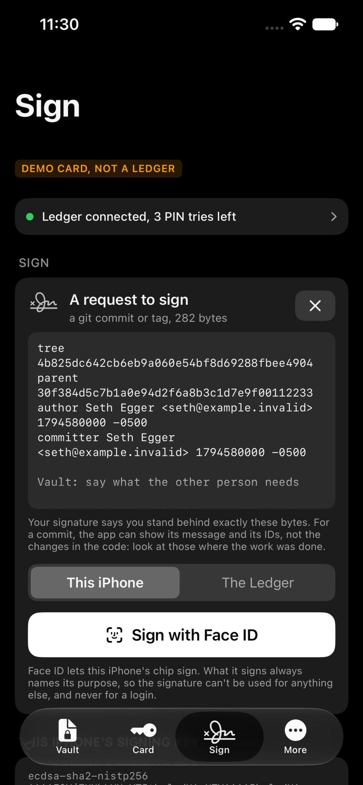
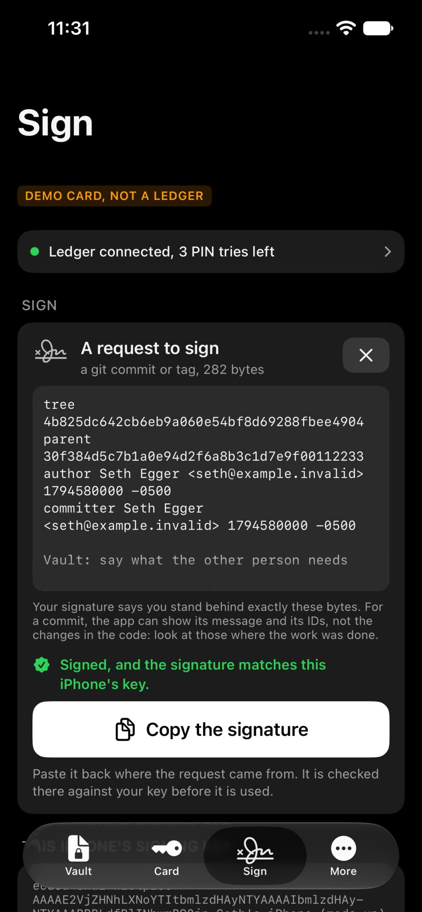

06 / 09Seal guide
Sign a git commit from your phone
The key that signs your commits is in your phone, and a commit is signed only after you’ve read it.
Git can sign commits with an SSH key. With Seal, that key is your iPhone’s: git asks the phone, you read the commit there, and you say yes with Face ID. The Mac side comes with Seal for Mac, the Claude Code plugin (see Lock your Claude Code sessions for the install and /seal:pair).
Set up a repository (once)
In Claude Code, inside the repository: /seal:git
That changes this repository’s own git settings and nothing else, with the key you paired. To sign every commit there: git config commit.gpgsign true.
Sign a commit
git commit -S -m "Your message"- 1
Git asks the phone: the request is put on the clipboard. When an agent ran git, a notice shows on the Mac too.
- 2
On the phone: Sign page,
Paste a signing request. - 3
Read it. For a commit you see its message, its author and its IDs.
- 4
Tap
Sign with Face ID, thenCopy the signature. - 5
That’s all: the Mac picks the signature up from the clipboard, checks it with ssh-keygen, and only then gives it to git. In a terminal you can also paste it. Git waits about two minutes.

Your signature says you stand behind exactly those bytes. The phone shows the commit’s message and IDs, not the changes in the code: look at those on the Mac before you sign.
GitHub’s Verified mark
Add the same key to GitHub as a Signing Key (Settings, SSH and GPG keys, New SSH key). Commits signed this way can then show as Verified.
Sign a message you type
Under Or a message you type, write anything and sign it. The signature is plain text you can paste anywhere, and Copy check command gives the one line that checks it on a computer.

Every signature names its purpose: a commit, a file, a pass. A signature made for one can’t be used as another, and never as a login.